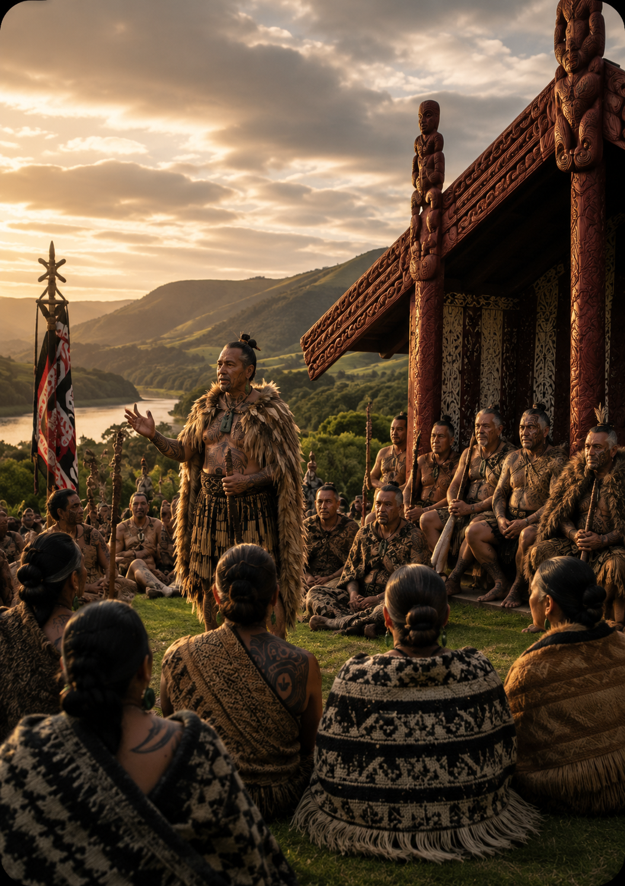
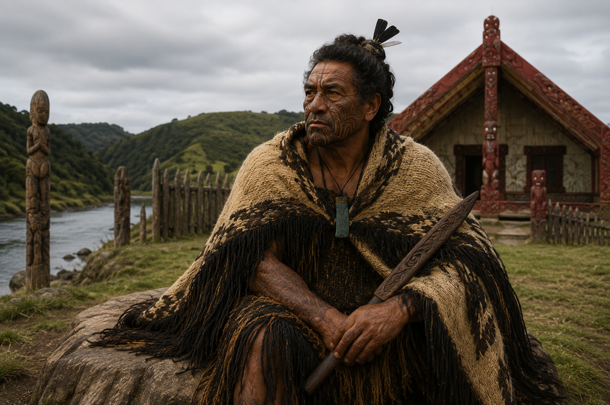
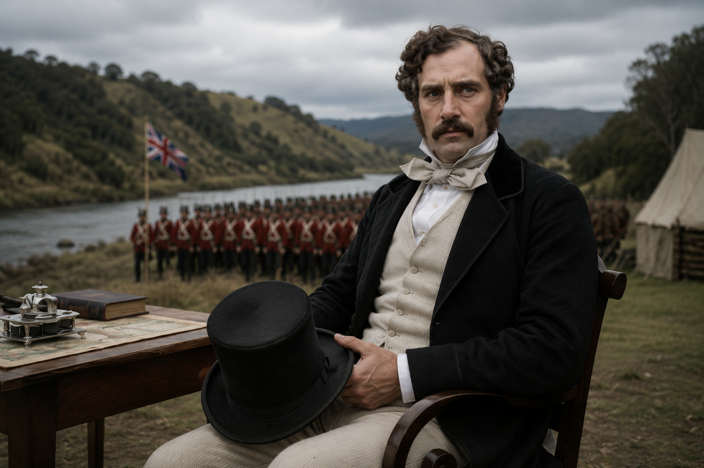

👑 What is the Kīngitanga?
Learn why Māori leaders created the Kīngitanga, discover the story of Pōtatau Te Wherowhero, and explore the values of unity, leadership and service.
Read →Discover the story of the Māori King Movement—why it began, how it grew, and how it shaped the history of Aotearoa New Zealand.
Explore the StoryThree chapters. One movement. A legacy that continues today.

Learn why Māori leaders created the Kīngitanga, discover the story of Pōtatau Te Wherowhero, and explore the values of unity, leadership and service.
Read →
Follow the growth of the Māori King Movement, from the coronation of Pōtatau through the leadership of Tāwhiao and the strengthening of the movement.
Read →
Explore the events that led to the Waikato War, Governor George Grey's invasion of Waikato, and the lasting consequences for the Kīngitanga and many iwi.
Read →"History shapes who we are.
Understanding it helps shape who we become."